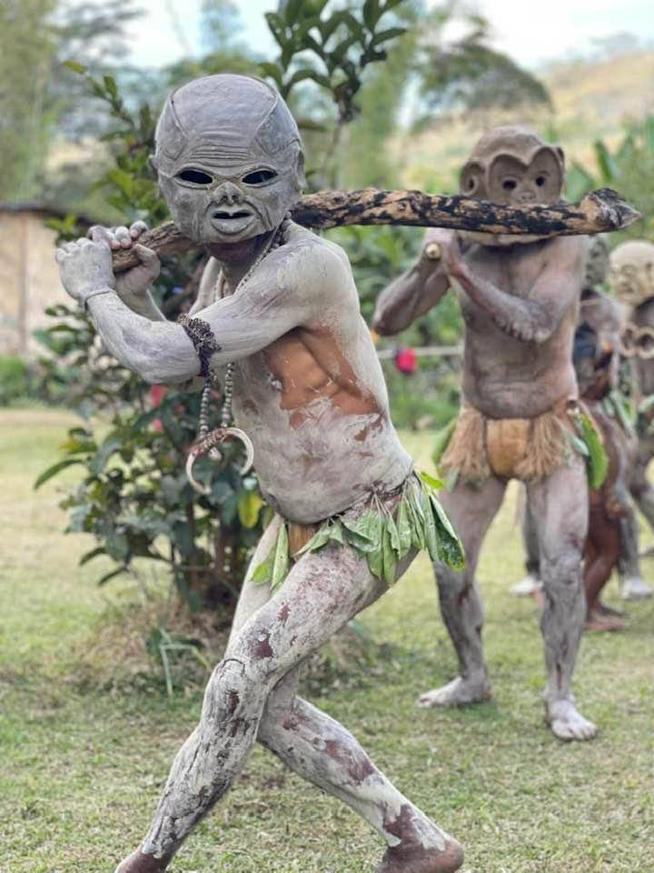

Of all the spectacular tribal performances at Papua New Guinea's legendary Goroka Show, none capture the imagination quite like the Asaro Mudmen. Emerging from the misty valleys of the Eastern Highlands, these ghostly figures with their haunting white masks and elongated clay fingers are among the most photographed and celebrated cultural icons in the Pacific.
For travelers planning to attend the Goroka Show, the Mudmen represent a unique opportunity to witness one of the Pacific's most fascinating cultural traditions. The moment visitors first encounter these ghostly figures often brings a mixture of awe, curiosity, and sometimes a slight shiver down the spine. They are unforgettable, and they await visitors at the Goroka Show 2026.
Goroka Show 2026
September 11–13, 2026
Three days of tribal performances, including the legendary Asaro Mudmen
What Is the Goroka Show?
The Goroka Show is Papua New Guinea's largest and most famous cultural festival, held annually in the Eastern Highlands provincial capital. First established in 1957, this three-day event brings together over 100 different tribal groups from across the country to celebrate Papua New Guinea's incredible cultural diversity through traditional sing-sings, dance performances, and ceremonies.
For the Asaro Mudmen, the Goroka Show is their biggest stage—a chance to share their legendary story with thousands of visitors from Papua New Guinea and around the world. The show typically draws between 50,000 and 100,000 spectators, making it one of the premier cultural events in the Pacific region.
The Legend Behind the Mudmen

To truly appreciate the Mudmen at the Goroka Show, understanding the legend that brings them to life is essential. According to oral tradition passed down through countless generations, the people of the Asaro Valley—just a short drive from Goroka—once found themselves in a desperate conflict with a neighboring tribe.
Defeated in battle, they fled into the Asaro River, hiding in the waters until nightfall. When they emerged, their bodies were coated in gray river mud. Their hair was matted with clay, their skin ghostly pale in the moonlight. As they silently crossed the battlefield, the enemy warriors saw these strange figures rising from the water and believed they were spirits returning for revenge. Terrified, they fled.
The Asaro people had won without a single weapon raised. From that day forward, the Mudmen became both a symbol of victory and a lasting tradition—a reminder that sometimes, the greatest power lies not in strength, but in the stories told and believed.
What to Expect at Goroka Show 2026
The Mudmen Performance
The Asaro Mudmen typically perform multiple times throughout the Goroka Show weekend. Their entrance is always dramatic—emerging slowly from behind the main stage, moving in eerie silence, their elongated clay fingers swaying with each deliberate step. Unlike other tribal groups who perform with drums and chanting, the Mudmen maintain complete silence, adding to their ghostly mystique.
Each Mudman wears a distinctive mask created from clay collected from the Asaro River. These masks are not mass-produced; each is individually crafted by the performers themselves, with unique facial expressions ranging from serene to fearsome. The clay is applied over a bamboo frame, then fired to create a hardened, permanent mask. The process can take weeks to complete.
The performers' bodies are coated in white clay, and their fingers are extended with bamboo splints to create the eerie, elongated appearance that makes the Mudmen so distinctive. Some masks feature intricate patterns or animal motifs, while others depict ancestors or spirits.
Other Performers at the Show
While the Mudmen are a highlight, they are just one of over 100 tribal groups performing at the Goroka Show. Visitors will also see:
- Huli Wigmen from Hela Province, famous for their elaborate wigs and vibrant face paint
- Chimbu Skeleton Dancers painted to resemble ancestral spirits
- Highlands Warriors in full battle regalia with feathers, shells, and traditional weapons
- Coastal Dancers from the islands with unique rhythms and movements
- Sing-sing Groups from every province, each with their own distinctive costumes and songs
Planning Your Goroka Show 2026 Visit
Dates and Location
Goroka Show 2026
Dates: September 11–13, 2026
Location: Goroka Show Grounds, Goroka, Eastern Highlands Province
Main performances: 9:00 AM – 5:00 PM daily
Getting to Goroka
Goroka is accessible by air from Port Moresby via regular flights with Air Niugini and PNG Air. Flight time is approximately one hour. During the Goroka Show, flights fill up months in advance, so early booking is essential.
For travelers already in the Highlands region, Goroka is connected by road to Mt. Hagen (approximately 3 hours), Lae (approximately 4 hours), and Kundiawa (approximately 2 hours). Road conditions can vary, so traveling with a reputable tour operator like Bismark Touris is recommended.
Accommodation
Accommodation in Goroka during the show fills up quickly—often months in advance. Options include:
- Bird of Paradise Hotel – The premier hotel in Goroka, popular with international visitors
- Pacific Gardens Hotel – Located near the show grounds with comfortable rooms
- Lodge-style accommodations – Several smaller lodges and guesthouses throughout the town
- Homestay options – For a more authentic experience, some local families offer accommodation
Tip: Book accommodation at least 3-4 months in advance to secure the best options.
What to Bring
- Camera – The Goroka Show is one of the most photographed events in the Pacific
- Rain jacket – The Highlands can be unpredictable, especially in September
- Warm layers – Goroka is at 1,600 meters elevation; mornings and evenings can be cool
- Comfortable walking shoes – Visitors will be on their feet exploring the show grounds
- Sun protection – Hat, sunscreen, and sunglasses
- Cash – Bringing plenty of local currency for food, crafts, and souvenirs is essential
Experiencing the Asaro Mudmen Beyond the Show

For travelers who want to go beyond the spectacle of the Goroka Show, extended tours to the Asaro Valley itself—the ancestral home of the Mudmen—are available. Just a 30-minute drive from Goroka, the valley is a beautiful landscape of rolling hills, coffee plantations, and traditional villages.
Visiting the Asaro Valley allows travelers to:
- Meet the Mudmen in their home village – See where they live and learn about their daily life
- Watch a mask-making demonstration – See how the clay masks are crafted from start to finish
- Participate in a traditional welcome ceremony – Experience the hospitality of the Asaro people
- Learn about the legend from village elders – Hear the story told in the place where it happened
- Photograph the stunning landscape – The Asaro Valley is one of the most picturesque locations in the Highlands
Responsible Tourism and Cultural Respect
When visiting the Goroka Show and the Asaro Valley, approaching cultural experiences with respect and understanding is essential. Here are some guidelines:
- Always ask before taking photographs – While performers at the show expect to be photographed, asking first or acknowledging with a small gesture of thanks is respectful
- Dress modestly – The Highlands are culturally conservative; revealing clothing should be avoided
- Do not touch performers or their costumes – Their traditional dress often holds spiritual significance
- Support local artisans – Purchase crafts directly from the communities visited
- Travel with reputable operators – Ensuring tours support local communities fairly is important
Photography Tips for the Goroka Show
- Bring a telephoto lens – Capturing details of the costumes and performances requires reach
- Arrive early – The best viewing spots fill up quickly
- Use a fast shutter speed – Dancers move quickly, especially during performances
- Capture the atmosphere – The crowd, vendors, and setting all contribute to the story
- Ask before photographing children – Seeking permission is always respectful
Book Your Goroka Show 2026 Cultural Experience
Spaces for the Goroka Show are limited and fill quickly. Contact Bismark Touris to secure your place for this unforgettable cultural festival.
Phone: +675 76769513
WhatsApp: +675 76769513
Email: info@bismarktouris.com
Book by June 2026 to secure the best accommodation options and guide availability
Inquire About Cultural Tours →Frequently Asked Questions About the Asaro Mudmen & Goroka Show
What are the Goroka Show 2026 dates?
The Goroka Show 2026 will be held from September 11 to 13, 2026 (Friday through Sunday) in Goroka, Eastern Highlands Province, Papua New Guinea.
Who are the Asaro Mudmen?
The Asaro Mudmen are legendary tribal performers from the Asaro Valley near Goroka. According to tradition, they defeated enemies by emerging from a river covered in mud, terrifying their opponents who believed they were spirits.
How can I book a Goroka Show tour?
Bismark Touris offers premium Goroka Show packages including accommodation, transfers, guided tours, and optional Asaro Valley extensions. Contact us to secure your place for September 2026.
Where can I see the Asaro Mudmen perform?
The Asaro Mudmen perform multiple times daily at the Goroka Show. Visitors can also arrange exclusive village visits to the Asaro Valley to meet the Mudmen in their ancestral home.
What should I bring to the Goroka Show?
Bring a camera, rain jacket, warm layers for cool mornings, comfortable walking shoes, sun protection, and cash for crafts and food. Early booking of accommodation is essential.